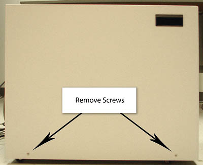
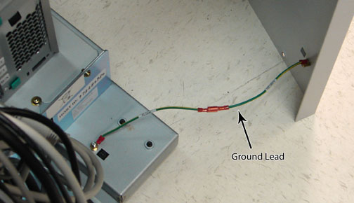
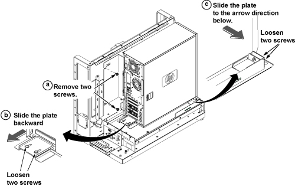
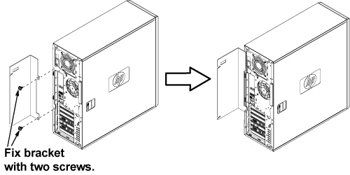
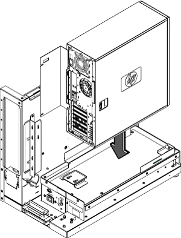
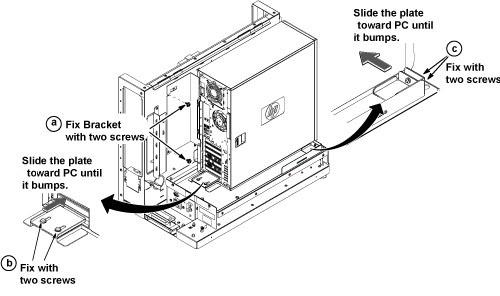
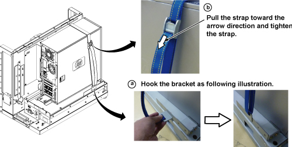

Operating Documentation
Direction 5440001-3, Rev# 6
Signa HDxt Service Methods
Module Version 3.0, Version Date 8/19/10
Operating Documentation |
| Required Persons | Preliminary Reqs | Procedure | Finalization |
|---|---|---|---|
| 2 | Not Applicable | 2 hours | 30 mins |
| Item | Qty | Effectivity | Part# | Manufacturer | |
|---|---|---|---|---|---|
| Screwdriver Set | 1 | - | - | - | |
| Item | Qty | Effectivity | Part# | Manufacturer | |
|---|---|---|---|---|---|
| Refer to current FRU manual. | As required | - | - | - | |
| ||||
| Electrocution Hazard! | ||||
| Hazardous voltages exist in the goc when energized. | ||||
| before beginning any work, shut down software and follow Lockout/tagout (loto) power to the GOC before Continuing. The GOC supports an optional UPS so Confirm your respective site configuration. |
| Condition | Reference | Effectivity |
|---|---|---|
Host computer and GOCAA must be powered off. | - | - |
Please ask the customer to archive all images to an external storage device (for example PACS, DVDs, etc.).
Perform the Save Info procedure. For details, see Save and Restore Tool.
Shut down all system applications that are still running. Turn off power to the PDU by following LOTO for the PGR PDU/Gradient Subsystem.
| NOTE: | If the optional GOC UPS accessory is installed, use extra caution when powering down. |
Remove the two (2) screws that secure the left side panel. (See Illustration 1.)
Illustration 1: Screws on Left Side Panel

| NOTE: | The side panel has a short ground lead (shown in Illustration 2) connecting it to the main chassis. When removing the side panel, do not strain this ground lead. |
Illustration 2: Left Side Panel Ground Lead

Remove the left side panel by lifting it up.
Remove all the cables connected to the computer, ensure they are properly labeled, and note their locations for reattachment. (Illustration 3 shows the cable configuration.)
Illustration 3: HP Z400 Cable Configuration

Loosen the strap and remove the hook as shown below.
Illustration 4: Removing Strap

Refer to the illustration below, and remove the Z400 Computer as follows:
Remove the two screws securing back bracket.
Loosen the two screws on the back slide plate, and slide the plate backward.
Loosen the two screws on the side slide plate, and slide the plate in the direction of the arrow as shown.
Illustration 5: Removing HP Z400 Computer

| ||||
| The computer weighs 50 pounds, which requires two people to move it. | ||||
Carefully remove the computer using the back and bottom brackets from the GOC.
Remove the back bracket from the defective computer, and install it on the new computer.
Illustration 6: Installing Back Bracket

| ||||
| The computer weighs 50 pounds, which requires two people to move it. | ||||
Position the computer as shown below.
Illustration 7: Computer Placement

To secure the Computer:
Attach the back bracket to the GOC frame with the two screws.
Slide the back slide plate toward the computer until it aligns, and secure with the two screws.
Slide the side slide plate toward the computer until it aligns, and secure with the two screws.
Illustration 8: Securing Computer

Tighten the strap according to the following steps:
Hook the bracket to the slot of the bottom plate.
Pull and tighten the strap to secure the computer.
Illustration 9: Tightening Strap

Restore all cables to the computer.
Attach the Dust Filter to the front panel.
Illustration 10: Attaching Dust Filter

Restore the GOC left side panel, and reconnect the ground lead to the left side panel.
Remove LOTO from the PDU.
Restore power to the GOC, boot software, and ensure proper system operation.
| NOTE: | If necessary, reconnect the optional UPS and ensure power is restored. |
Perform the applicable Loading Host System Software procedure to load software and applications onto the operating system.
| NOTE: | The Load from Cold must be performed to properly transfer customer options. |
Update the elicense with the new Host ID.
Repackage the defective PC for return.
Perform a scan to ensure the system and applications are working properly.